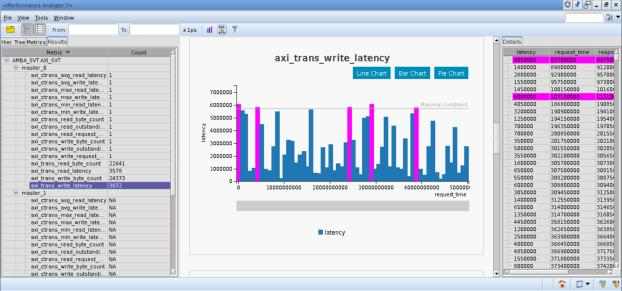

The performance analyzer tool is used to calculate the performance of sub-systems. For more information on FSDB Dumping, see Support for Native Dumping of FSDB.
Invoking Verdi GUI After Running the Simulation
1. Invoking Verdi GUI after running the simulation:
verdi –lca –ssf test_top.fsdb
Figure 8‑1 Final View Of Performance Metric With Graph and Data Details

For more information, see Verdi_Performance_Analyzer.pdf.
Metrics Description
Performance metrics are used to measure the performance of sub-systems. Each AMBA VIP has three types of performance metrics as follows:
Transaction metrics
Cross transaction metrics
Cross instance metrics
Transaction Type Metrics
These metrics are used to measure the performance of any given transaction. The following metrics comes under this type of metrics:
*_trans_read_latency
*_trans_write_latency
*_trans_read_byte_count
*_trans_write_byte_count
Cross Transaction Type
These metrics are used to measure the performance across transactions at a given port. The following metrics comes under this type of metrics:
*_ctrans_min_read_latency
*_ctrans_min_write_latency
*_ctrans_max_read_latency
*_ctrans_max_write_latency
*_ctrans_avg_read_latency
*_ctrans_avg_write_latency
*_ctrans_read_request_count
*_ctrans_write_request_count
*_ctrans_read_outstanding_count
*_ctrans_write_outstanding_count
*_ctrans_read_byte_count
*_ctrans_write_byte_count
Cross Instance Type
These metrics are used to measure the performance of the transactions across all ports. The following metrics comes under this type of metrics:
*_cinst_read_request_count
*_cinst_write_request_count
*_cinst_read_request_percentage
*_cinst_write_request_percentage
*_cinst_read_bus_bandwidth
*_cinst_read_bus_bandwidth
*_cinst_read_byte_count
*_cinst_write_byte_count
* indicates the protocol name.(for example, for AXI *_trans_read_latency will be axi_trans_read_latency)
For more information, see $DESIGNWARE_HOME/vip/svt/amba_svt/latest/doc/PDFs/axi_performance_metrics_supported_through_Verdi.pdf.